Summary
In this tutorial, I will be guiding you into getting started on your first Valorant Montage.
Even if editing a quirky gaming video is not your taste, you will still be able to walk out of this knowing how to edit basically any type of video
New Project
First we are going to create a new project, this marks the begining of your editing journey
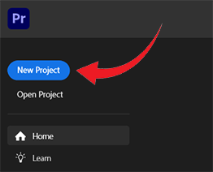
Give it any name you want, I will be naming mine "Editing Tutorial"
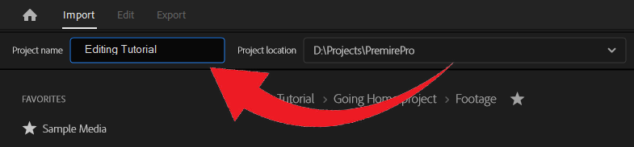
After you are done, click "Create" to be brought to our editing timeline
Downloading
At the begining of every project, an editor will always know what he wants to create beforehand, storyboard your ideas, get creative.
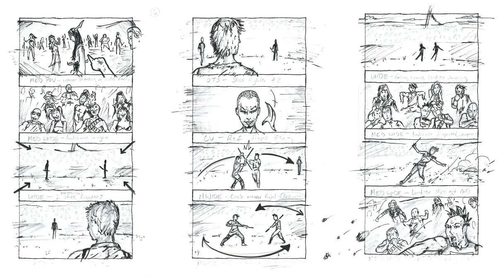
After that, we are going to go ahead and get our assets, which in video editing terms, our footages.
This can range from video you took, or mp3s from youtube, I would recommend using https://ytmp3.nu/F055d/ to convert any youtube link into a mp3 or mp4 with ease
Click on "Mp3/Mp4" button to toggle between file convertion type
Press "Convert" to see the simulated file
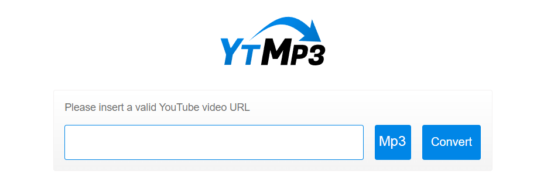
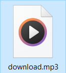
Importing
Lastly we will import our pluggins, this is optional as the built in libary for Adobe Premiere Pro is already pretty powerful
However, I wanted to make this journey as refreshing as posible, so we will be apply effects 10x faster than using normal techniques
Installing sapphire
This will help in camera shakes and such, giving more impact to each kill
Installing Magic Bullet suit
This will aid in color correction and allow the entire video to be much crisper
Control
In this section you will learn how to navigate through Premiere Pro
Technically, you will only need 3 keys to craft a fully edited video. The big three are "Control, C and V"
So train your fingers to be able to press this 3 keys without looking, and fast
Press a Key
Control is to be paired up with C and V to trigger "Copy" and "Paste" shortcuts, this will ease your editing efforts
C is shorcut for "Razor Tool" while V is for the "Cursor Tool"
I will get into more details about them in the next section
But first, let us insert our content, simply drag and drop them into the Libaray pannel
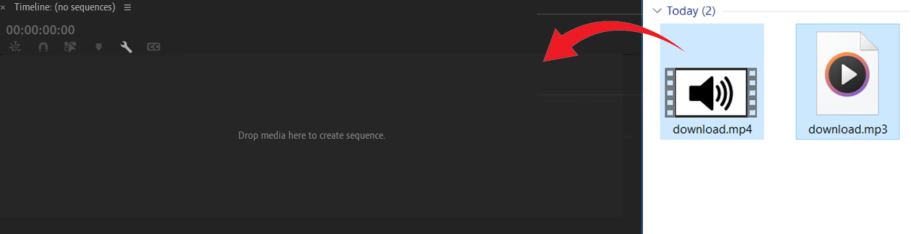
C for cut
Press "C" to toggle into the razor tool, left click anywhere in your content to split it into 2 parts.
This is how we will trim our footage
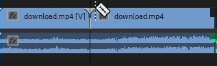
V resembles cursor
Press "V" to toggle back to Cursor mode, practice switching from Razor to Cursor mode quicky as it will be a norm to do so
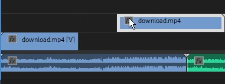
M for marker
This is an optioanl step, but it is good practise for syncing our clips to the audio's beat
Placing markers allows our content to eaily snap into it, which helps in "pixel perfect" placements
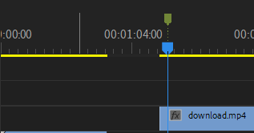
Transform
The most common and simpliest transitions/effects is the manipulation of the video's position
Select the video to expose it's properties
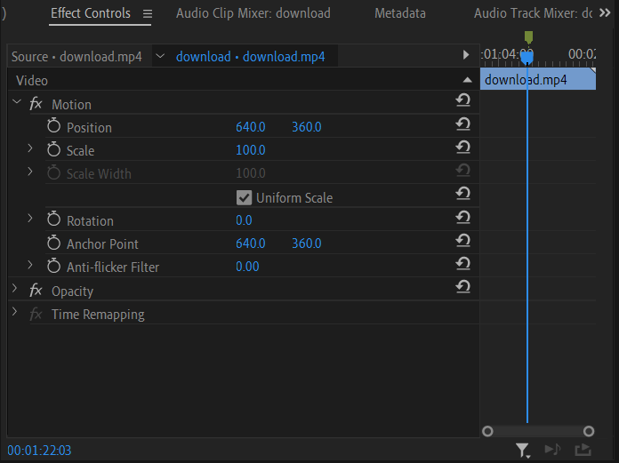
Click on this icon to start editing it using keyframes, drag the automatically made keyframe to the begining of the effect.
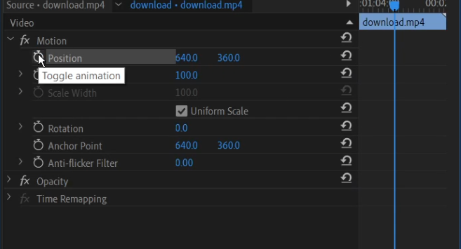
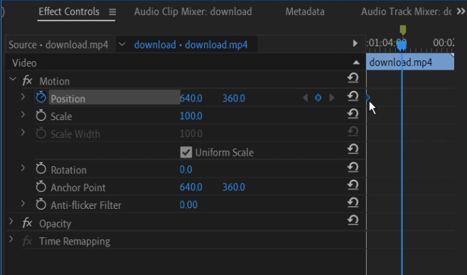
go to the end of the effect and then adjust its position accordingly
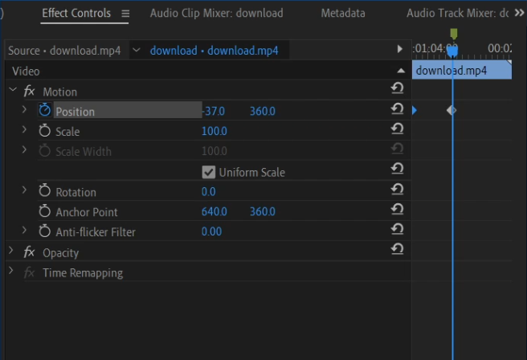
Usually I make the transition smoother by using easy-ease-in for the end, but this is up to you
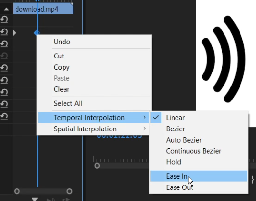
Adjustment layer
This is how we are going to apply multiple effects onto one clip, this method allows us to duplicate effects easily onto another clips.
Press on this icon and input your desired settings before proceeding
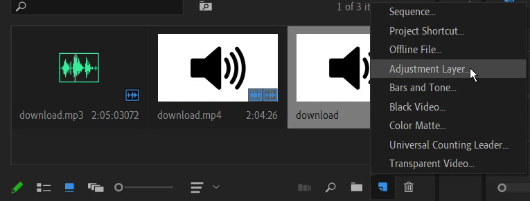
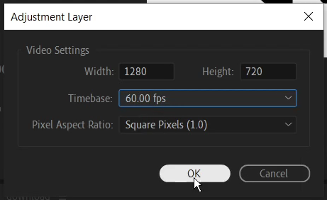
Drag it above the clip(s) you want the effects to be applied on, any video clips below it will be effected
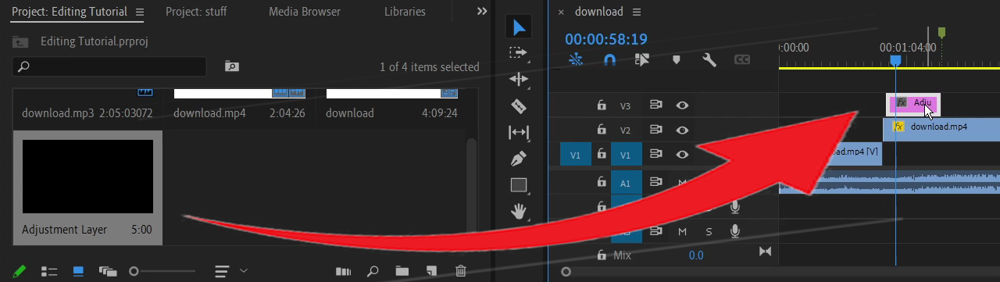
Trim it accordingly to the start and end of effects for better readability
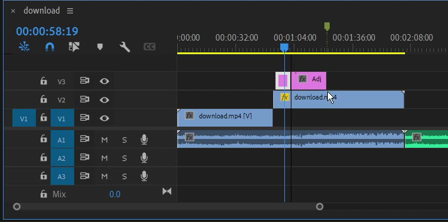
Shake
This is a very commonly seen effect in Video Game montages, usualyl applied to enhance the visual of a kill
Search for "S_Shake" and drag it onto your adjustment layer
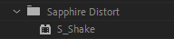
Just like keyframming the transform effect, we create a start key and set the amplitute to be 0 at which ever location to your liking
(I recommend 10 frames for 60fps videos)
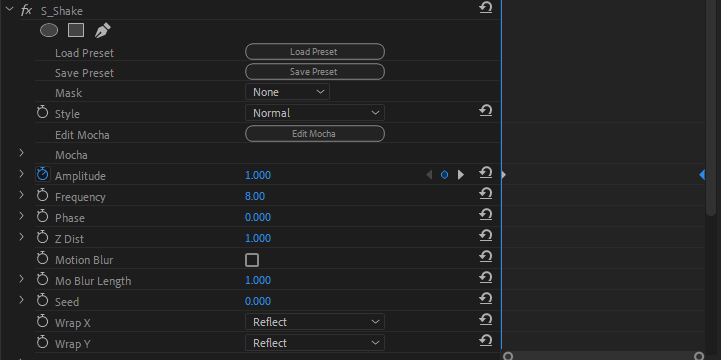
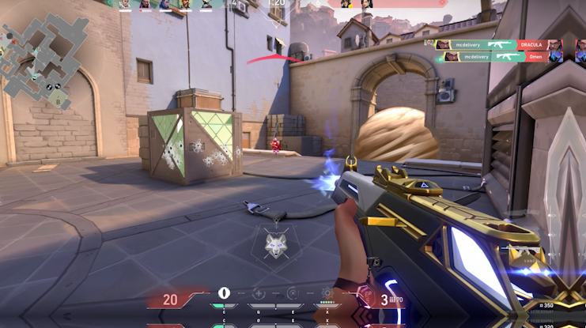
Lastly, enable Motion blur
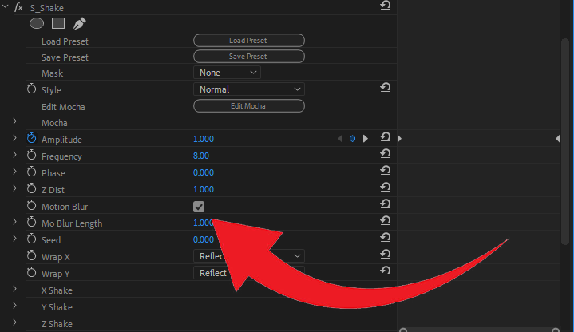
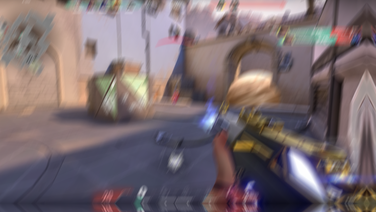
Hue Saturation & Brightness
This is another effect we will use to spice up each and every kill the player gets, it simiply simulates a quick light flash usually used along-side with S_Shake
Search for S_HueSatBright and drag it onto our adjustment layer
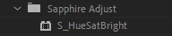
Excatly like the previous two effects, we are going to use more keyframming
Set the first frame to be at value of 3, then skip forward 5 frames before setting it to 0
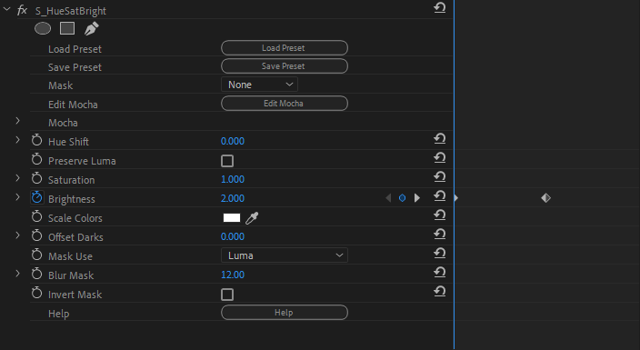
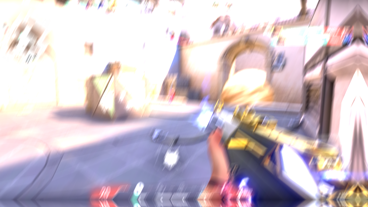
Of course, you can adjust all the values to your liking
Effects clonning
Now duplicate all the effects to every kill, by copying and pasting the adjustment layer
Remember that the start of the adjustment layer will be the start of the kill
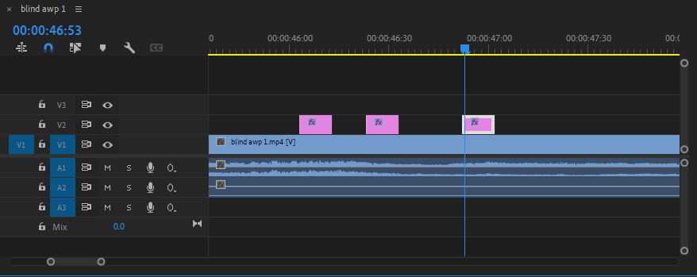
Colour Correction
Lastly, we are going to further enhance the visuals with a simple click, with the help of Magic Bullet's Look effect
Create a new adjustment layer and make sure it is a the top of every video
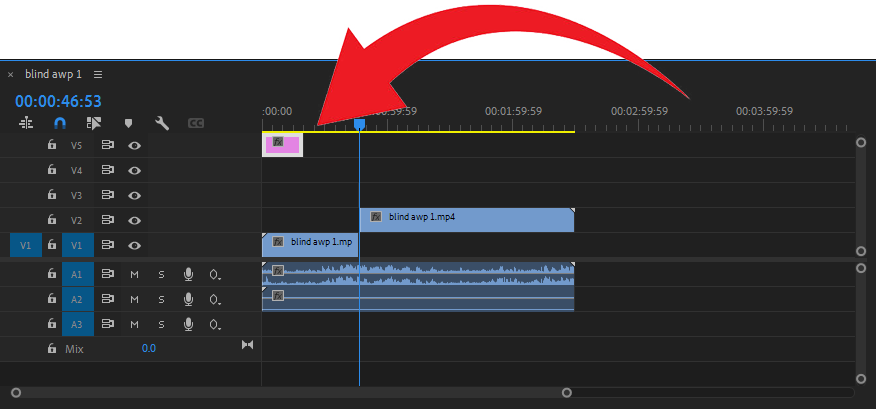
Furthermore, stretch the adjustment layer using the Cursor mode and dragging it's side until it filled up the entire video's timeline
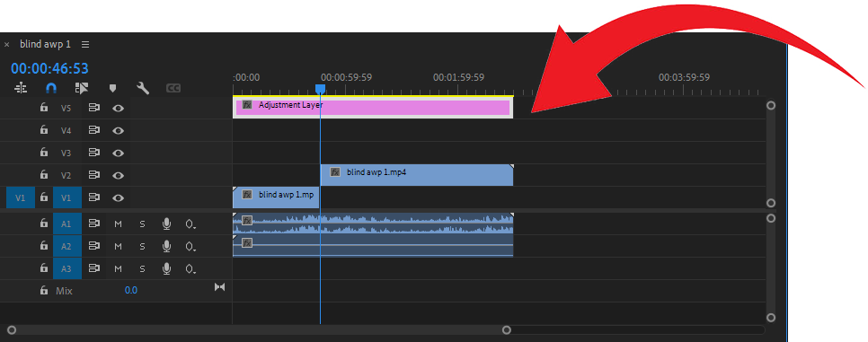
Next, search up for Looks under Magic Bullet's catagory
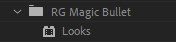
Drag it into the adjustment layer, then click on the edit button
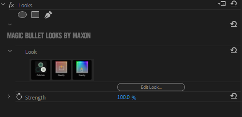
A new window will pop-up, simply select the one that looks good in your opinion
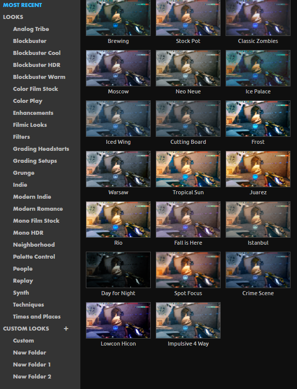
Once done, click on the Tick icon at the bottom right
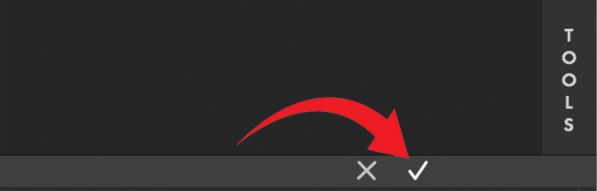
Result:
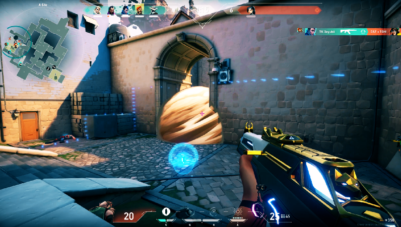
Video Checkup
We are now at the final part of the project, rewatch your video and see if any adjustments need to be made
Once done, press Control + M to bring up the render menu
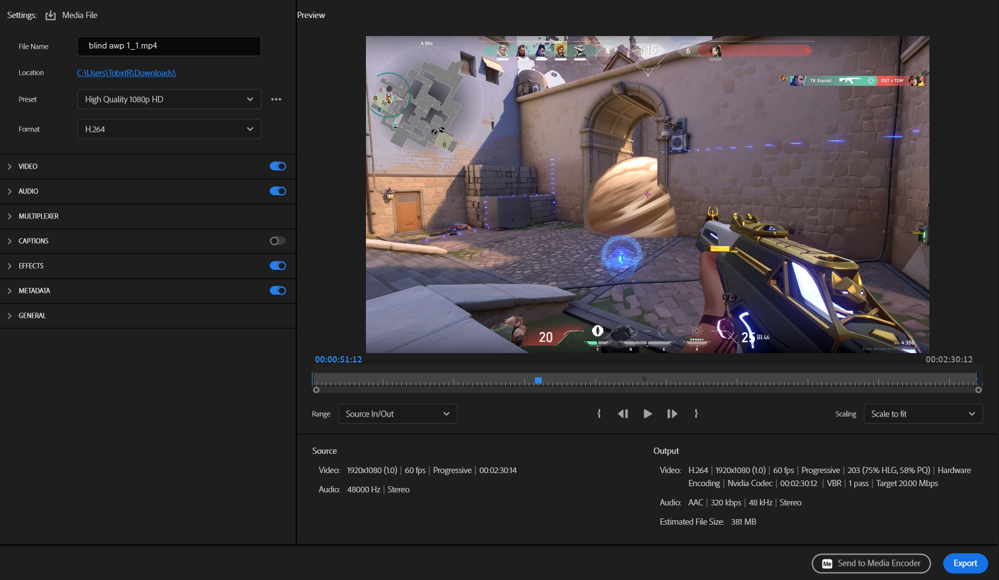
Rename the video to whatever you want
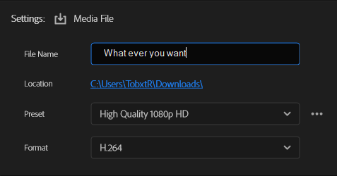
And set the target folder to locate your rendered video
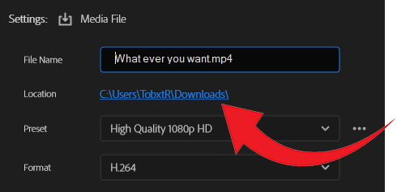
Lastly, click on export to begining the rendering process
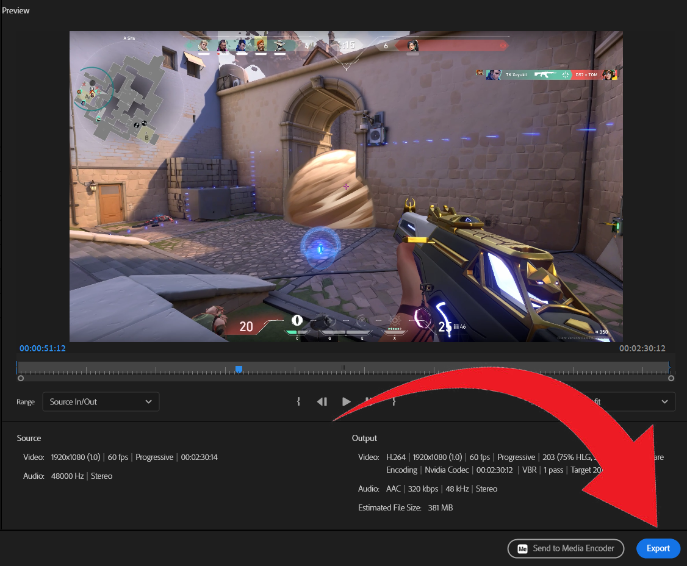